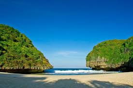

Pantai Greweng
Pantai Greweng merupakan pantai kecil dengan garis pantai yang tidak sampai 1 km, ombak di Pantai Grewengpun juga tidak terlalu besar, jadi sangat cocok untuk berenang. Pantai Greweng ini juga sering disebut dengan nama Pantai Pulutan. Walaupun masih kalah populer dengan pantai lainnya, namun pemandangan yang ditawarkan objek wisata Jogja satu ini tak boleh kita remehkan. Ditambah dengan suasananya yang terbilang cukup sepi menjadikan Pantai Greweng serasa pantai pribadi. Tapi, untuk bisa sampai di bibir Pantai Greweng kita harus trekking melalui jalan setapak terlebih dahulu, jalur menuju pantai terbilang cukup ringan kok. Sepanjang perjalanan kita akan disuguhkan dengan pemandangan alam sekitar Pantai Greweng yang masih alami. Selain itu terdapat juga “Hutan Batu”, dinamakan hutan batu karena di area tersebut banyak ditemukan bebatuan dengan berbagai bentuk yang membuat pemandangan di kawasan tersebut nampak artistik. Kita juga akan melewati sebuah goa kecil yang entah apa namanya, di sekitar Pantai Greweng juga terdapat sumber air tawar yang mengalir langsung menuju ke pantai, aliran air ini berada di perbukitan sebelah utara.

Biasanya wisatawan yang datang ke Pantai Greweng bertujuan untuk camping, dengan suasananya yang masih cukup sepi, terutama di hari biasa menjadikan Pantai Greweng sangat cocok untuk camping seru bersama teman teman. Pantai Greweng bisa menjadi alternatif camping kalian di Jogja. Karena masih cukup sepi pantai ini cocok untuk menenangkan fikiran yang penat setelah beraktifitas di kota yang padat.